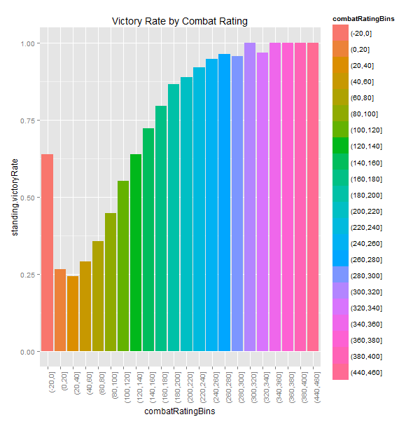
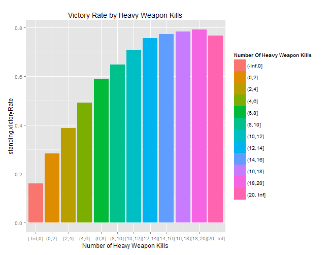

A look at trends within Destiny's competitive multiplayer and what players can do to increase their chances for victory
View project on Github
Overview
As any good Destiny player knows, Destiny's random loot distribution is consistently frustrating. Up until the release of the House of Wolves, players were not rewarded based on their performance. Instead some players were deemed blessed by the Random Number Generator Gods and were then rewarded with coveted exotic and legenadry gear. This seeming unfairness was often followed by, "Why the frack did that guy get that?!"
However, since the release of House of Wolves, players are rewarded more frequently if they perform better in the Crucible. With the random system of the past there was no real system in place. Players were evaluated and judged at random. Now, Bungie has implemented a very simple cause effect relationship - win more, get more. Once a system like this is inplace, the next step (as good capatlist Americans) is to exploit it.
The point of this project is to examine trends within Destiny’s competitive multiplayer games. The idea is that if I can find a model that accurately predicts who wins and who loses, then we can find tangible things players can do in order to boost their chances of winning (and getting more loot).
I used a mixture of R and Python to complete this project. A lot of the initial exploratory data analysis was done in R, but everything else was done in Python.
Building the Dataset
Before we begin, I would like to note that this blog post was originally made for a school project and was turned in on June 6th, 2015. I've tried to update the post since then, but my free time is limited. Many of the trends in here still hold though, but I think it is important to know the timeperiod in which this was originally written.
For this project, I created two dataset by doing a random walk through some Post Game Carnage Reports. Bungie stores all of this data online and it is publicly accessible through a REST API called the Destiny Platform. A user makes a request, and the server sends them back a nice JSON file to parse. I had been working on a small Python library to handle making requests to the Destiny Platform and I had just enough of it developed to be able to use on this project. It handles requesting data and checking for errors that occur during that process.
I then built another Python script that utilizes that library to do a “random walk” through Post Game Carnage Reports. This random walk does the following: given a player’s name get their most recent game, then pick a player from that game and get their most recent game that isn’t the same as one that we already have, and then pick another player from that game and so on. I was having a problem where this fetch process would die every so often due to errors between my interface and the Destiny Platform (the source of which I still haven’t fully figured out). In order to deal with this, I created a list of starting players, and if an error occurs, the random walk jumps to the next player in the list and starts from there. This list of “anchors” includes myself and 8 other people that I know play frequently. That way, I know that their most recent game is actually recent.
The first dataset was created about a week before the release of House of Wolves, and the other dataset was created about a week after. The reason for doing the second dataset after the release of House of Wolves was to show that the trends that I discuss in this project do not only pertain to pre-House of Wolves Destiny. After any major update, there is a large amount of flux happening in the community. New weapons, armor, maps, and level cap change the game. I think using data from this time-frame strengthens the findings of this project.
The datasets were then combined to create one large rectangular matrix with over 150,000 rows and 60 columns. This boils down to only being about 11,500 games worth of information, or approximately 83 days worth of gameplay. When considering the number of games of Destiny that have been played over time, this number is very small, but I do feel it is large and diverse enough to be an accurate sample of the data.
This dataset is biased in that it only looks at one gametype – Control.
- That means that the findings from this project apply to Control, but not necessarily to all other gametypes. The reasons for picking Control are:
- It seems to be more popular (or it is at the very least my favorite)
- It’s team based
- There are objectives other than straight kill the other player
I think each of these reasons is significant. Since Control is very popular, that means more people care about what how to optimize their performance for it. The fact that it’s team based adds an extra layer of complexity. Someone doesn’t need to have the highest score in order to win a game (and they can still have that score and lose a game), and my model needs to make use of features that take this into account. Objectives also throw an extra layer of dimension. In Clash, the goal the simply to kill the other team more often than they kill you. The team with the highest number of kills, and the least number of deaths, is going to win which is not necessarily true in Control. While the kills and victory are strongly correlated, having more kills than the other team doesn't always mean victory. In fact, 11.5% of winning teams had less kills than the opposing team (more on this idea later).
Every row in the dataset is a different player from a different game. There are repeat players in the dataset, but they always belong to a different game. Every column in the dataset is a different feature that I thought might be helpful in predicting who wins and who loses. The only column name which might be confusing is the “refrencedId” column, which was a typo of “referenceId” which tells you what map the match was played on.
Looking at the Data
After building the dataset, I pulled it into R to take a quick look at some trends in the data. There were a lot of them, but I am only including the ones that I found to be the most interesting.
One of the first trends I went to look at was player weapon usage. From personal experience, it often feels as though the same weapons are used all the time, so I wanted to see if that was true. It turns out, that the top 15 weapons account for just over 50% of all usage. While creating the dataset, I looked at the two weapons that a player had the most kills with that game. Some of the top 15 most used weapons also appear in the top 15 second most used weapons. For example, Felwinter's Lie for some people is their most used weapon at the end of a game, but is other player’s second most used weapon at the end of a game.

I then wanted to see how weapon usage is connected to victory. As you can see in the plot below, while these weapons are used very often, they don’t necessarily increase a player’s chance for victory. All of the weapons have a victory rate of about 50%. The Stranger's Rifle is interesting to see here because it is a lower-tiered weapon than everything else. The Stranger's Rifle could also be considered an outlier as it is arguably the best rare-tierd weapon in the game. The main point here is that while people prefer to use Legendary and Exoctic weapons, they seem to make no difference in a player's chance for winning.

Another interesting set of factors to look at is map. It is often argued that certain teams on certain maps always win. This leads to people sometimes leaving a match because they believe that the odds are stacked against them.
Victory Rate for each Team by Map
All things being equal, we would expect the victory rate for each team on any give map to be about 50%. According to this plot, that is not the case. Firebase Delphi has the most significant gap where Alpha Team wins almost 56% games. Anomaly has a similar problem except this time it is Bravo team that tends to dominate.
It's also neat to look at the frequency that maps are played on. This really has no impact on the conclusions I reached about victory on certain maps but it does show that some of the more heavily played maps actually have some of the worst bias. Shores of Time is one of the more frequently played maps, and it is also one of the more heavily biased maps.

We can also look at which maps have the worst quit rate. Losing a team member can definitely set a team back, and as we can see, certain teams tend to quit more on maps than others. This also seems to be corelated to victory rate of a team on a given map.
Quitting Rate for each Team by Map
We can also look at a player’s Combat Rating. Combat Rating is a metric that Bungie created to effectively rank player’s along a scale.
Combat Rating appears to be directly tied to a player’s victory rate with the only anomaly being when a player has a combat rating of 0. Since Bungie keeps track of the combat rating in their system, I am assuming that it is a time dependent variable. As player's win and lose over time, I would expect their combat rating to change. Another interesting project could be to try and reverse engineer the combat rating of a player and figure out how Bungie is ranking all of us. The overall point here is that a player’s combat rating is a very good indicator of whether or not that player will win. It is also a team-independent variable which makes it very interesting to consider. When predicting victory, should we compare teams based on their average combat rating, or should it be based more on a spread where we look at the difference between highest and lowest players.
Predicting Victory
The first step I took in predicting victory was to do a quick random forest on the data and see what happened. Doing this gave me a root mean square error of over 50%. This is unsurprising since this model attempted to predict a player’s victory based on their own stats and therefore players on the same team were being given different standing.
The next step was then to melt the dataset down into a team based dataset instead of a player based dataset. Each game would have two vectors associated with it – one for Alpha team and one for Bravo team. The features of each team were built off of the data of the player’s of each team.
After rebuilding the dataset in this fashion, I then split the data into training and test sets and ran 10-fold repeated cross validation on them. This gave me the probabilities that a particular team would be given a 1 for their victory variable. A value of 1 actually corresponds to defeat (this is how it is stored in the Destiny Platform) I then took this output and ran it through a Python script that looked at each game and compared these probabilities. Within each game, the winning team is the team with the smaller probability, and the loser therefore the one with the higher probability. In the event that these probabilities are the same, one team is randomly chosen to be the victor.
This method gave me a root mean square error of 14.5%. This also only used a handful of features. I was also careful to avoid features that are dead giveaways for victory (like the actual team score).
Securing Victory
While beig able to predict victory like this is nice, this analysis is also being done <strong>after the game is over</strong>. What is probably more helpful is the other trends that I discovered that most often seem to correlate to victory. These are all things that players should look to do before or during a game.
MVP
For starters, always shoot to be the best player in the game. Seem simple and intuitive, but teams with the highest scoring player on them win over 80% of the time. This value deviates only slightly even if the team with the highest scoring player also has the lowest scoring player. So either be the best yourself or be friends with someone who is.

Play with Friends
Being on a team with friends also increases chances for winning. The less fireteams on a team, thereby the more friends you being into a match with you, the more likely you are to win.

With a Bang
This one goes two ways. Being able to effectively use your heavy weapons increases the likelihood of victory, but also preventing the other team from being able to use theirs ends in their defeat. If you can't use your own heavy, you would be just as well off trying to steal theirs.
This is my Rifle; This is my Gun
Be careful how heavily you rely on sniper rifles on certain maps. While setting up shop and camping usually results in less deaths, teams who rely on snipers more heavily during a game tend to lose.
Sniper Rifle Usage Rate by Winners and Losers
PTFO
Playing the objective is sometimes debated during games. Is it better to actually try and take the objective, but die a lot in the process, or is it smarter to just set up a campsite and kill everything that moves, even though you don't hold a multiplier. I would argue, that teams should always try to play the objective. The graph below shows the average score per kill for winning and losing teams on each map. Across the board, the team with the higher average score per kill wins more. Since holding the majority of the objectives is directly related to getting more points per kill, teams should push to play to the objective.
Average Score per Kill
Furthermore, teams often question whether or not to go for domination. The benefit is the max multiplier, but the cost is that you might cause the game to switch the spawn points, and place the enemy team behind you. As we've seen, starting spawn location on a map is important, and so a team that pushes for domination may end up swaping spawns and actually place themselves in a bad place.
Domination Kills by Map
From this plot though, we can clearly see that domination is helpful in winning. Players are awarded a "Domination" medal when they kill an enemy player while their team holds all three points. On average, it looks like winning teams get anywhere from 1-3 domination kill a match, while losing teams on average get one every other match. The fact that domination kills stay so low is an indication that domination generally doesn't last for long. Teams really only seem to get a few kills out of their domination before the other team wins back a point, but those few kills also seem to make a huge difference.
Conclusion
These are only a few trends that I gathered from the dataset. I'm sure there are others. The overarching idea is that there are definitely concrete things players can do to boost their chances of winning.
There is a lot more to gain from the Destiny API. This is only data from Control, it would be interesting to look at other gametypes and see how the gametype changes player behavior. It would also be interesting to try and apply the Control model to other gametypes. The place that this might have the most impact is in the Trails of Osiris gametype. The stakes in that gamemode are so high, that being able to determine victory would be huge.
It would also be cool to look at how these trends have developed over time. There have been several updates to weapon stats, and to where objectives are located on certain maps. Running this analysis before and after each update may give insight into how effective these updates were. For example, auto rifles were nerfed hard early in the game, while hand cannons and pulse rifles received a buff. I would expcet to see that auto rifle usage decreased heavily, while hand cannon and pulse rifle usage rose to fill in the gap.
- To see what the current weapon breakdown situation is check out these two plots:
The last thing that I would like to be able to do is to only use features that are known before the game starts (i.e. character level, class, combat rating, etc.) to see if we can predict a winning team before the game even starts. This would allow players to see what their chances of winning are before entering a game, and potentially to be able to figure out how to adjust themselves so that their team has a higher chance of victory.
All of the interactive plots on this page (and some others) can be found by going to by going to this page.
I would love to see what other people can find in/do with the data. Feel free to fork my repo and run with it. Happy coding.